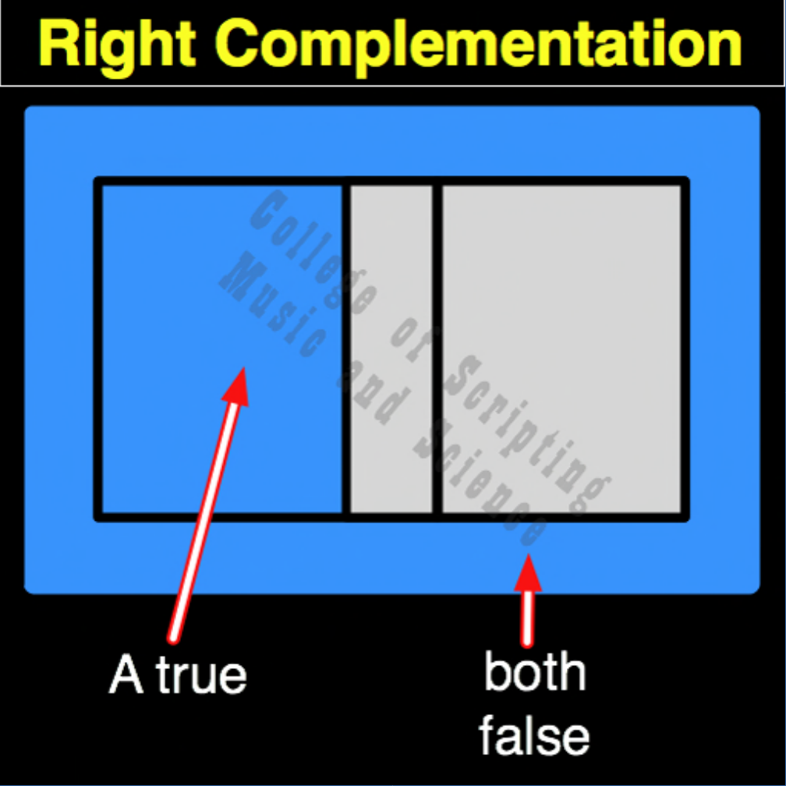

| RC | |
|---|---|
| 0 + 0 | = 1 |
| 0 + 1 | = 0 |
| 1 + 0 | = 1 |
| 1 + 1 | = 0 |

In the ethical architecture of Starfleet, Right Complementation (RC) is the protocol of the Empty Vessel. It is the final, profound lesson of the Identity Square. Like RP, this gate completely ignores external authority or noise (Input A), but instead of asserting the individual ego, it actively suppresses it. If the individual will demands action (1), the discipline of RC forces stillness (0). If the individual ego is quiet and surrendered (0), the system achieves the perfect, receptive state of the Empty Vessel (1). It teaches cadets the highest form of mastery: true wisdom often requires stepping entirely out of your own way, abandoning the ego, and allowing the universe to speak.
| RC Gate FLIPPED to make RP Gate | |
|---|---|
| 0 + 0 = 1 | FLIPPED becomes 0 |
| 0 + 1 = 0 | FLIPPED becomes 1 |
| 1 + 0 = 1 | FLIPPED becomes 0 |
| 1 + 1 = 0 | FLIPPED becomes 1 |
RC is the OPPOSITE of RP (Right Projection).
RC completely ignores Input A. The output is always the exact INVERSE of Input B.
Because it is a Pillar of Identity, RC is incredibly resilient: It is a Self-Dual gate.
// gateRc.js
function gateRc(a, b)
{
// The system intentionally suppresses the ego (Input B), enforcing stillness (0) when driven to act (1).
if (b == 0)
{
return 1; // The ego is quiet; the Empty Vessel is achieved
}
else
{
return 0; // The ego attempts to act; the system enforces surrender
}
}
//----//
/*
RC
1010
A B
0 0 = 1
0 1 = 0
1 0 = 1
1 1 = 0
Opposite: RP
*/